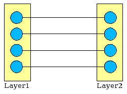
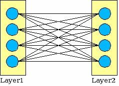
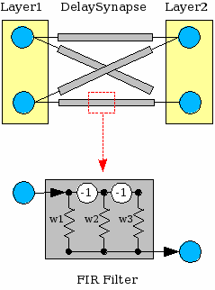
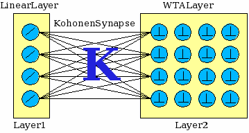
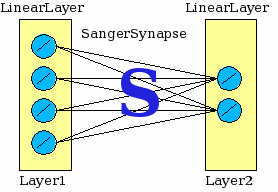

The Synapses
The Synapse represents the connection between two layers, permitting a
pattern to be passed from one layer to another.
The Synapse is also the ‘memory’ of a neural network. During the
training process the weigh of each connection is modified according the
implemented learning algorithm.
Remember that, as described above, a synapse is both the output synapse
of a layer and the input synapse of the next connected layer in the NN,
hence it represents a shared resource between two Layers (no more than
two, because a Synapse can be attached only once as the input or the
output of a Layer).
To avoid a layer trying to read the pattern from its input synapse
before the other layer has written it, the shared synapse in
synchronized; in other terms, a semaphore based mechanism prevents two
Layers from accessing simultaneously to a shared Synapse.
The Direct Synapse
The DirectSynapse represents a direct connection 1-to-1 between the
nodes of the two connected layers, as depicted in the following figure:

Each connection has a weight equal to 1, and it doesn't change during
the learning phase.
Of course, a DirectSynapse can connect only layers having the same
numbers of neurons, or nodes.
The Full Synapse
The FullSynapse connects all the nodes of a layer with all the nodes of
the other layer, as depicted in the following figure:

This is the most common type of synapse used in a neural network, and
its weights change during the learning phase according to the
implemented learning algorithm.
It can connect layers having a whatever number of neurons, and the
number of the weights contained is equal to N1 x N2,
where Nx is the number of nodes of the Layerx
The Delayed Synapse
This Synapse has an architecture similar to which of the FullSynapse,
but each connection is implemented using a matrix of FIR Filter
elements of size NxM.
The following figure illustrates how a DelaySynapses can be represented:

As you can see in the first figure, each connection – represented with
a greyed rectangle - is implemented as a FIR (Finite Impulse Response)
filter and in the second figure the internal detail of a FIR filter is
shown.
A FIRFilter connection is a delayed connection that permits to
implement a temporal backprop algorithm functionally equivalent to the
TDNN (Time Delay Neural Network), but in a more efficient and elegant
manner.
To learn more on this kind of synapses, read the
article Time Series Prediction Using a Neural Network with Embedded
Tapped Delay-Lines, Eric Wan, in Time Series Prediction:
Forecasting the Future and Understanding the Past, editors A.
Weigend and N. Gershenfeld, Addison-Wesley, 1994. Moreover, at http://www.cs.hmc.edu/courses/1999/fall/cs152/firnet/firnet.html you can find some good examples using FIR filters.
The Kohonen Synapse
The KohonenSynapse belongs to a special kind of components that permit
to build unsupervised neural networks.
This components, in particular, is the central element of the SOM (Self
Organizing Maps) networks. A KohonenSynapse must be followed necessarily
by a WTALayer or a GaussianLayer component, forming so a complete SOM,
like depicted in this figure:

As you can see, a SOM is composed normally by three elements:
- A LinearLayer that is used as input layer
- A WTALayer (or GaussianLayer) that's used as output layer
- A KohonenSynapse that connects the two above layers
During the training phase, the KohonenSynapse's weights are adjusted to
map the N-dimensional input patterns to the 2D map represented by the
output synapse.
What is the difference between the WTA and the Gaussian layers? The
answer is very simple, and depends on the precision of the response we
want from the network.
If we're, for instance, using a SOM to make predictions (for instance
to forecast the next day's weather), probably we need to use a
GaussianLayer as output, because we want a response in terms of
percentage around a given value (it will be cloudy and maybe it will
rain), whereas if we'are using a SOM to recognize handwritten
characters, we need a precise response, (like 'the character is A',
but not 'the character could be A or B') hence in this case we
need to use a WTALayer, that activates one (and only one) neuron for
each input pattern.
The Sanger Synapse
The SangerSynapse serves to build unsupervised neural networks that
apply the PCA (Principal Component Analysis) algorithm.
The PCA is a well known and widely used technique that permits to
extract the most important components from a signal. The Sanger
algorithm, in particular, extracts the components in ordered mode –
from the most meaningful to the less one – so permitting to separate
the noise from the true signal.
This components, by reducing the number of input values without
diminishing the useful signal, permits to train the network on a given
problem reducing considerably the training time.
The SangerSynapse normally is posed between two LinearLayers, and the
output layer has less neurons than the input layer, as depicted in the
following figure:

By using this synapse along with the Nested Neural Network component
it's very easy to build modular neural networks where the first NN acts
as a pre-processing element that reduces the number of the input
columns and consequently its noise.